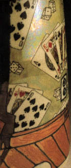

Enhancing
Images with Decals
Article by Harriet Gamble on Rimas
VisGirda's decal method
Originally published in Ceramics
Art & Perception.
In
order for an artist’s work to stay current and interesting – both
for the viewer and the artist – some change is essential. Sometimes
the change is radical, but often it is more subtle. For nearly 30
years, the work of Lithuanian-born ceramic artist Rimas VisGirda
has been evolving. His ceramic pieces are almost cubist in design,
and his unique angular style creates unusual forms on which he paints
satiric narratives to describe his vision of life.
After receiving his MFA in ceramics, VisGirda spent 25 years teaching
at colleges and universities. Because he was teaching sculpture
and drawing as well as ceramics, his work included all three disciplines.
"I found myself drawing or decorating surfaces of the vessels
and then I began to change the forms of the vessels – to simplify
them and change their shapes – so they would make better surfaces
for my drawings."
VisGirda’s pieces are complex and his multi-fired processes take
time and patience. He prefers high-fire ceramics because "high-fire
clay has integrity, and the hardness and depth of surface cannot
be duplicated." He also likes to use a bright palette of colour,
which is difficult to achieve in high temperature firing. To create
the effect he wants, VisGirda developed a process that combines
both high and low-fire and which may require as many as 20 firings.
Throughout his career, VisGirda has involved himself in residency
programs at various locations and attended numerous symposiums.
"In 1988, I visited the Soviet Union as a guest of the USSR
Union of Artists and have been to a number of symposiums in Eastern
Europe during the ensuing years. Symposiums, most often held in
factories, are an opportunity for me to meet new colleagues and
exchange ideas and philosophies, as well as experience a different
cultural and social environment."
VisGirda states that when he participates in a symposium, he allows
the experience to influence his work, both technically and ideologically.
"Technically, I experiment with various ways of using the materials
available at the particular venue. I try throwing and handbuilding
the unfamiliar clays, as well as using pre-made forms available
to me at the factories. I also try to incorporate technology available
at these factories to create pieces. Ideologically, I try to incorporate
the influences of daily life, social interaction and the physical
surroundings of the new environment into my work. The visual resolution
of the finished work is a combination of past and new experiences."
Attending two porcelain symposiums in the Czech Republic during
1994 and 1997 brought a new focus to VisGirda’s work. The 1994 symposium
was held at the EPIAG-Dalovice Factory in Karlovy Vary, an old resort
town, and the 1997 symposium was at LEANDER 1946 in Loucky, a small
village about 10 km from Karlovy Vary.
While working at these factories, VisGirda discovered decals. "I
had made some decals a long time ago – back in the ‘70s – but not
ceramic decals. When I was at the 1994 symposium, I was snooping
around the large factory and found the section which made the decals
for the porcelain that was produced in the factory. I asked if they
would make a decal for me. The process was technical and I learnt
something of the complexities. These decals were strictly for the
decoration of souvenirs. I decorated about 80 factory-made demitasse
cups with my decals and gave them to the symposium participants
and factory workers." VisGirda and his wife, Billie Theide,
attended the 1997 symposium together. "Billie discovered an
entire room in this factory filled with drawers upon drawers of
decals. Some of the decals dated back to the 1930s and ’40s."
VisGirda was drawn to the small flower decals he found because
he likes the overall floral pattern of chintz. He hired one of the
factory decorators to put these tiny individual decals on one of
his pieces. "It probably would have taken me several days to
cover that pot. The experienced factory decorator finished it in
about an hour and a half." During this symposium, VisGirda
continued to experiment with the decals for background and decoration.
After VisGirda returned home, he discovered that not only did his
interest in using decals continue, but others were also interested.
He took the information he already had, experimented, and taught
himself more. "I was teaching at the time, and my students
also wanted to learn how to make ceramic decals. That’s where it
began, and now I am giving workshops around the country."
VisGirda has developed a straightforward, simplified approach to
making ceramic decals. "I’ve discovered that you don’t need
expensive or special equipment. I’ve developed a decal technology
that is quick and can be performed economically in a well-ventilated
home studio, kitchen or basement."
VisGirda’s new work reflects his growing interest in decals. His
signature style has not changed but both his own decals as well
as commercial decals are now added for background and embellishment.
He is also, to a limited extent, using some details in his main
imagery.
According to VisGirda, the major advantage of decals for the ceramist
is the ability to transfer one’s own or others’ artwork to ceramic
pieces and to replicate that image on as many pieces as desired.
"While it takes some time and effort to create the first image,
hundreds of exact duplicates can be made instantly. By mixing and
matching a number of images on the same piece, a series of ideas
or even a complex story can be told easily many times." VisGirda
sees decals as a useful tool to help convey a message or concept
through art and engage the viewer’s attention.
Next > Rimas VisGirda’s
Decal Process for Ceramics
More Articles
|